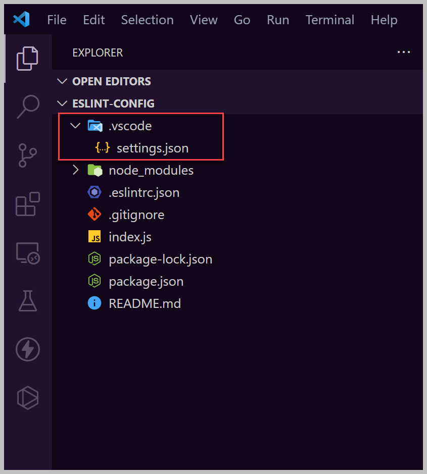
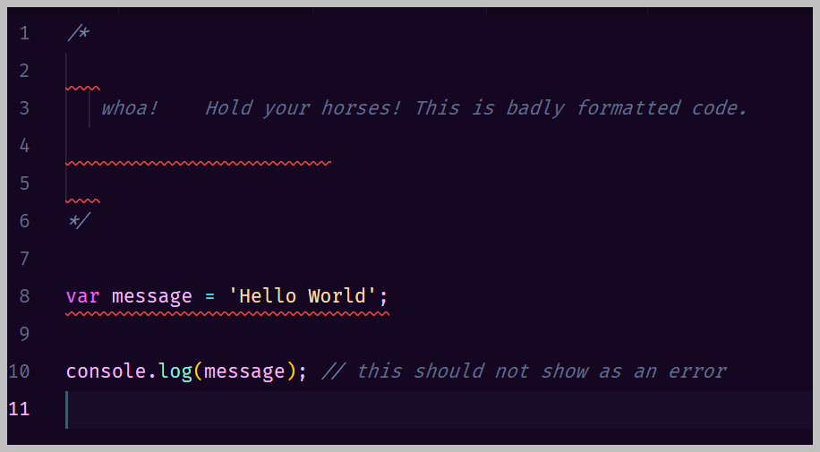

Overview
ESLint is a wild pony.

It can be very hard to wrangle and tame. But once you do, it is by far your best coding buddy during those lonely days in the saddle.
Hope you like this silly metaphor.
In this short assignment you will take an empty repo and configure it for modern web development using:
-
-
- vscode
- eslint
- airbnb
- prettier
-
If you do it all correctly, your tools will turn bad code into good code.
What are ESLint, Airbnb, and Prettier
Be sure to do the assigned reading NPM Tools for a Modern Web Developer to get a better understanding of these tools.
Configuring VS Code Using Its settings.json Configuration File
VS Code can be configured to help work with, and not against, your tool configurations. It comes configured with a long list of settings, each of which has a default.
To increase the flexibility of VS Code, its settings can be configured both globally (user) and per project (workspace). https://code.visualstudio.com/docs/getstarted/settings
User settings, when present, override VS Code's default settings.
Workspace settings, when present, override user settings. The workspace
settings
file (settings.json) is located under the .vscode folder in your root
folder.

We will make use of this file so that you produce code which is standard to my liking. This helps you create code which is easy to read. It also helps when you work as a team, since your code will be standard between team members.
Instructions
Clone Your Repo
-
- Have your development environment set up
- Accept the GitHub Classroom assignment https://classroom.github.com/a/quIpuRpV
- Clone your new GitHub repo to a new folder (DO NOT USE a cloud storage folder
-
One Drive, Google Drive, Dropbox, etc. - for your local repos)
- Have your development environment set up
Create a .vscode/settings.json file for VS Code
-
- Read How to Get Consistent Line Breaks in VS Code (LF vs CRLF)
- In this class, we will standardize a rule that says all your code will have LF line breaks (not CRLF)
- Along with setting LF as the rule, I have collected together other VS Code settings that I would like standard in your repos
- Create a .vscode/settings.json file (that
leading "dot" is very important, so don't leave it off) and copy the contents from my Gist:
https://gist.github.com/cynthiateeters/e9fc9de112bf5aabb24828a635c2b301
- Take note of what is in your new settings.json file.
- Choose any setting you like from that file, Google search it, and find a useful resource
that helps you understand it. (For example, you could search for "editor.formatOnPaste": true)
Then write, in your own words, a 1 paragraph explanation of what that setting does. Later you'll put that paragraph and link in README.md as well as word document for this assignment's submission. - CPR
Add a .gitignore file
-
- Create a .gitignore file (that leading "dot"
is very important, so don't leave it off) and copy the contents from this generator:
- Notice inside your .gitignore you have this snippet
### VisualStudioCode ### .vscode/* !.vscode/settings.json !.vscode/tasks.json !.vscode/launch.json !.vscode/extensions.json *.code-workspace
The star means match everything and the ! means not. So this tells git to ignore some files in the .vscode folder but not (!) files like your .vscode/settings.json file.
NOTE: By default, git ignores empty folders. So if you create the .vscode folder and not any file inside of it, the folder will not get pushed to the remote repo. - CPR
- Create a .gitignore file (that leading "dot"
is very important, so don't leave it off) and copy the contents from this generator:
Create a package.json file
-
- Create your package.json file by typing in the terminal (the flag --yes tells npm to take default values)
npm init --yes
- CPR
- Create your package.json file by typing in the terminal (the flag --yes tells npm to take default values)
Install and configure eslint
-
- Inside VS Code's integrated terminal, run the command
npm install eslint --save-dev
- In the integrated terminal, initialize eslint with the command
npx eslint --init
- You'll answer the eslint's questions using the up/down arrow keys and enter key.
- Answer these questions with these answers:
How would you like to use ESLint? To check syntax, find problems, and enforce code style
What type of modules does your project use? None of these
Which framework does your project use? None of these
Does your project use TypeScript? No
Where does your code run? Node
How would you like to define a style for your project? Use a popular style guide
Which style guide do you want to follow? Airbnb: https://github.com/airbnb/javascript
What format do you want your config file to be in? JSON
Checking peerDependencies of eslint-config-airbnb-base@latest
The config that you've selected requires the following dependencies:eslint-config-airbnb-base@latest eslint@^5.16.0 || ^6.8.0 || ^7.2.0 eslint-plugin-import@^2.22.1
Would you like to install them now with npm? yes
Installing eslint-config-airbnb-base ...
- The tool should now run and create a .eslintrc.json file
- The file should look like this: https://bit.ly/3nfV78p
- And the package.json file should have the following dev dependencies:
eslinteslint-config-airbnb-baseeslint-plugin-import
- If steps 6 and 7 are not true, delete the .eslintrc.json file and try the npx eslint --init command over again
- Inside the .eslintrc.json file add the following rules to the rules section
"no-console": "off", "no-trailing-spaces": "error" - NOTE: Later in this assignment you will be asked to research no-trailing-spaces and explain why we have that rule.
- Inside VS Code, install the eslint extension by Dirk Baeumer
- CPR
- Inside VS Code's integrated terminal, run the command
Install and configure prettier
-
- Inside VS Code's integrated terminal, run the command
npm install prettier --save-dev
- Then follow the installation instructions in the README for the npm package:
https://github.com/prettier/eslint-config-prettier
You'll have to do an npm install and an edit of .eslintrc.json file - Notice you have to edit .eslintrc as part of the above instructions (DO NOT forget to add
the comma after "airbnb-base" or you will create an error. )
Things tend to go kafloo-ey when you create errors in your config files. - Inside VS Code, install (or if installed, make sure it is enabled) the prettier extension
- CPR
- Inside VS Code's integrated terminal, run the command
Create an index.js file
-
- In the repo root, create an index.js file.
- Notice the code at https://bit.ly/2YIUlq5
- I made it funky on purpose with a code error and plenty of extraneous spaces
- Copy it into your index.js and in a second or two, if the eslint and prettier extensions are working with
their configuration files, you should get code something like this:
 - IF YOU HAVE lots more extra spaces and/or no red
squigglies and/or a squiggly under console.log and/or no semi-colons, your repo is not correctly configured.
STOP WHAT YOU'RE DOING -> TROUBLESHOOT THE PROBLEM -> ASK FOR HELP - IF IT'S GOOD: you'll notice how prettier fixed some spacing problems and added missing semi-colons. What is left are problems that eslint has flagged for fixing.
- Hover over the squigglies, see why eslint is unhappy, and get everything fixed. (DO NOT add comments to disable eslint as your fix)
- When prettier and eslint are happy, change the word badly to the word nicely in the comment
- Save the file
- CPR
Edit the README file
-
- Edit the README.md file, delete what is there, and
include a new level 1 heading with your choice for a title.
- Add a level 2 subheading saying Let's Learn a VS
Code
Setting
- Add your paragraph explaining the setting you chose to research
- Include your chosen setting and its current value as
code using escaping backticks - https://www.markdownguide.org/basic-syntax/#escaping-backticks or https://www.markdownguide.org/extended-syntax/#fenced-code-blocks
Example using single backticks: `"editor.formatOnPaste": true` - Include the link to your resource; use []() markdown format for a link https://www.markdownguide.org/basic-syntax/#links
- Add another level 2 subheading saying Let's Learn an ESLint Rule
- Google search for the
following
"no-trailing-spaces": "error" site:https://eslint.org/ - In Eslint.org, find the documentation for that rule
- Add your paragraph explaining (in your own words) why that rule is important (when they say source control systems, we should think git and GitHub)
- Include the link (in proper markdown) to that ESLint documentation page
- CPR
- Edit the README.md file, delete what is there, and
include a new level 1 heading with your choice for a title.
Screen Shot your README & commits history page
-
- Screen shot your README from the GitHub page (what I call your repo homepage)
- Screen shot your commits history page
Critique This Assignment
Give me a truthful estimate of the time you took on this project.
Is there anything you liked or disliked about this assignment? Feel free to discuss both your likes and dislikes (just make sure I can tell which is which 😉).
How could this assignment be improved?
Assignment Submission Requirements
When you have completed the assignment, submit a word document with the following:
-
-
- screen shot your GitHub homepage
- screen shot your GitHub repo's commit "History" page
- your paragraph explanation and link to one of our VS Code's settings
- your paragraph explanation and link to no-trailing-whitespaces rule
- your critique
-
Upload your word document to submit this assignment.